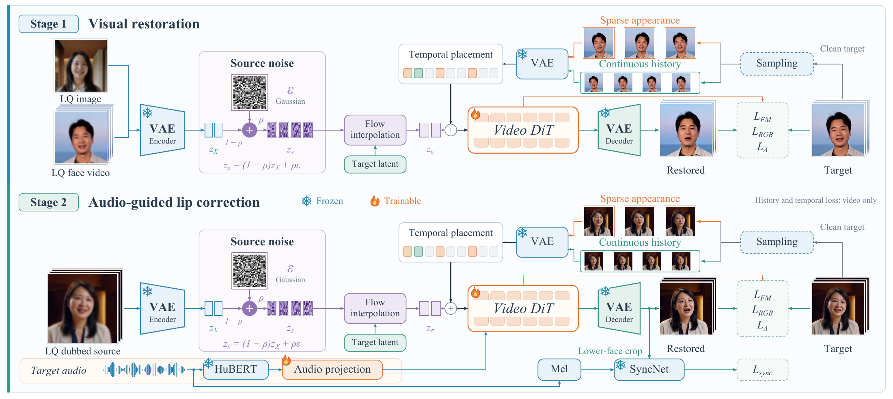

Audio-guided facial video restoration
TaoMate-FVSR
Beyond Sharpening.
Audio-Guided Facial Video Restoration.
Bring small faces back into focus.
Recover facial detail and audio-consistent articulation,
while keeping the original scene.
Loading synchronized video…
THE VIDEO COLLECTION
More scenes.
More ways to compare.
Explore the restored scenes and replacement-audio examples.
Choose a thumbnail to open its synchronized comparison.
01 / ORIGINAL AUDIO
Small in the scene.
Clear in the details.
Restore facial detail under the original audio.
The full shot gives context; synchronized head crops
reveal the lips, teeth, and surrounding texture.
COMPARE Input + two selectable baselines + our output, on one shared timeline. Change a baseline using the menu below its crop.
Native AIGC inputs · one shared timeline · audio plays from our output only
02 / REPLACEMENT AUDIO
New audio.
The same scene.
Guide mouth reconstruction with replacement audio.
Compare our joint restoration–dubbing result with
super-resolution followed by a separate dubbing model.
COMPARE Choose two baselines to inspect alongside the input and our output. All method outputs follow the same target audio.
All outputs within a case use the same target audio. Input is a visual control.
03 / BEYOND THE CLOSE-UP
See the whole picture.
View the result in the original composition.
Portrait and wide shots retain the scene around
the restored facial region.
Scene composites: the restored head is placed back into the source shot. The body and background are not super-resolved.
04 / THE IDEA
Facial detail and articulation.
One reconstruction process.
Low-quality video provides source structure, an appearance reference provides detail, and target audio guides mouth motion.

Retain source structure
Source–noise mixing retains visual evidence while allowing ambiguous mouth details to be reconstructed.
Separate appearance and motion
Structured reference conditioning distinguishes high-quality appearance cues from continuous motion history.
Restore under target audio
Original audio supports facial restoration. Replacement audio enables visual dubbing in the same model.